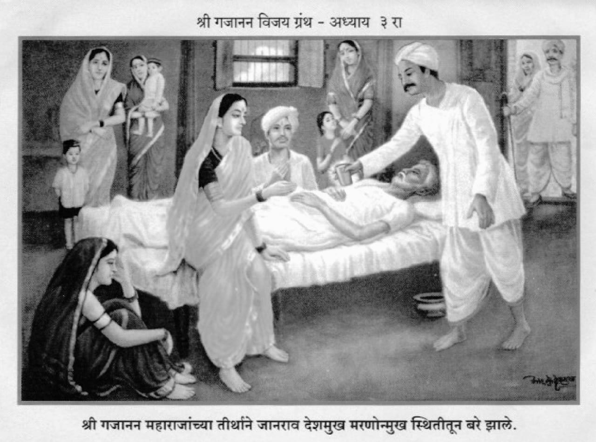

॥ अध्याय ३॥

॥ श्रीगणेशाय नमः ॥
जय जय सच्चिदानंदा श्रीहरी ।
कृपा करावी लौकरी ।
तुम्ही पदनताच्या वरी ।
कधीं न कठोर झालांत ॥१॥
तूं करुणेचा सागर ।
तूं दीन जनाचें माहेर ।
तूं भक्तासी साचार ।
कल्पतरु वा चिंतामणी ॥२॥
ऐसा तुझा अगाध महिमा ।
संत गाती राघवा रामा ।
दासगणूसी पुरुषोत्तमा ।
पावा वेळ करुं नका ॥३॥
असो बंकटलाला घरीं ।
राहाते झाले साक्षात्कारी ।
दीन दुबळ्यांचे कैवारी ।
श्रीगजानन महाराज ॥४॥
लांबलांबोनी भक्त येती ।
समर्थांतें वंदिती ।
मधु तेथें माशा जमती ।
न लगे करणें आमंत्रण ॥५॥
एके दिनी काय झालें ।
तें आतां सांगतों वहिलें ।
महाराज होते बसलेले ।
निजासनीं आनंदांत ॥६॥
ती प्रभातीची होती वेळा ।
प्राची प्रांत ताम्र झाला ।
पक्षी किलकिलाटाला ।
करुं लागले वृक्षावर ॥७॥
कुक्कुटाचे होती स्वप्न ।
मंदशीत वाहे पवन ।
वृद्ध करिती नामस्मरण ।
शय्येवरी बैसोनिया ॥८॥
उदयाचलीं नारायण ।
येऊं पाहे हर्षें करुन ।
तेणें तम पलायन ।
करुं लागला कंदरीसी ॥९॥
परम भाविक सुवासिनी ।
रत सडासंमार्जनीं ।
वत्स धेनूस पाहोनी ।
तोडूं लागलीं चर्हाटें ॥१०॥
ऐशा त्या रम्य वेळेस ।
एक साधु शेगांवास ।
येतां झाला दर्शनास ।
श्रीगजानन साधूच्या ॥११॥
तो भिकार गोसावी ।
मानमान्यता त्याची राहावी ।
कोठोनिया सांगा बरवी ।
श्रीमंताच्या मंडळींत ? ॥१२॥
भगवी चिंधी डोक्यास ।
झोळी वाम बगलेस ।
होती एक नेसण्यास ।
फाटकीसी लंगोटी ॥१३॥
मृगाजिनाचा गुंडाळा ।
पाठीवरी होता भला ।
ऐसा गोसावी बैसला ।
कोपर्यांत एकीकडे ॥१४॥
दर्शनासी भीड फार ।
होवो लागली साचार ।
अशा स्थितींत मिळणार ।
सवड कशी त्या गोसाव्यास ? ॥१५॥
तों ठायींच बैसोन ।
करुं लागला चिंतन ।
म्हणे समर्थाचे चरण ।
दृष्टि पडणें कठीण मला ॥१६॥
समर्थांचा लौकिक भला ।
मी काशींत ऐकला ।
आवडीनें नवस केला ।
भांग स्वामीस अर्पिण्याचा ॥१७॥
तो मम हेतु मनांत ।
जिरुन जाया पाहे येथ ।
या श्रीमान मंडळींत ।
माझ्या नवसास कोण पुसे ? ॥१८॥
गांजाचें नांव काढितां ।
लोक मजला देतील लाथा ।
मी तो आलों फेडण्याकरितां ।
नवस गांजाचा शेगांवीं ॥१९॥
माझ्या नवसाची ती मात ।
सांगू तरी कवणाप्रत ? ।
येथें एकही ना दिसत ।
प्रेमी या शांभवीचा ॥२०॥
जी वस्तु ज्या आवडे खरी ।
तिचाच तो नवस करी ।
आणि मानी सर्वतोपरी ।
हीच वस्तु उत्तम ॥२१॥
ऐसे नाना विचार ।
गोसावी करी साचार ।
झाला होता परम आतुर ।
दर्शन घ्याया समर्थांचें ॥२२॥
तें त्याचें मनोगत ।
जाणते झाले समर्थ ।
बोलते झाले इतरांप्रत ।
आणा काशीचा गोसावी ॥२३॥
तो पहा त्या कोपर्याला ।
आहे बिचारा दडून बसला ।
हें ऐकतां आनंद झाला ।
गोसाव्यास परमावधी ॥२४॥
आणि बोलला मनांत ।
त्रिकालज्ञ हे खरेच संत ।
मी जें बोललों मनांत ।
तें सर्व यांनीं जाणलें ॥२५॥
ज्ञानेश्वरींत षष्ठाध्यायीं ।
जी गोष्ट कथिली पाही ।
कीं स्वर्गलोकीच्या कथा त्याही ।
समजतात योगीवरा ॥२६॥
त्याचें आलें प्रत्यंतर ।
मला येथें साचार ।
धन्य धन्य हा साधुवर ।
त्रिकालज्ञ महात्मा ॥२७॥
न बोलतां माझा नवस ।
जाणतील हे पुण्य पुरुष ।
त्याचें प्रत्यंतर यावयास ।
अवधी उरला थोडका ॥२८॥
मंडळींनीं गोसाव्याला ।
पुढें आणोन उभा केला ।
तों महाराज वदले तयाला ।
काढ झोळीची पोटळी ॥२९॥
जी तीन महिनेपर्यंत ।
रक्षण केलीस झोळींत ।
त्या पोटळीचें आज येथ ।
होवो दे गा पारणें ॥३०॥
गोसावी पदीं लागला ।
गहिंवर त्यासी दाटला ।
गडबडा लोळूं लागला ।
बालकापरी स्वामीपुढें ॥३१॥
महाराज म्हणती गोसाव्यास ।
पुरे आतां उठोन बैस ।
पोटोळीच्या बुटीस ।
काढ बाहेर झोळीच्या ॥३२॥
नवस केलास ते वेळीं ।
नाहीं लाज वाटली ।
आणि आतां कां ही लाविली ।
चाळवाचाळवी निरर्थक ॥३३॥
गोसावी होता महा धूर्त ।
तो बोलला भीत भीत ।
जोडुनीया दोन्ही हात ।
ऐसें नम्र वाणीनें ॥३४॥
मी बुटी काढितों ।
नवस आपुला फेडितों ।
परि मागणें मागतों ।
एक तें द्या दीनाला ॥३५॥
आठवण माझ्या बुटीची ।
नित्य राहावी आपणा साची ।
हीच इच्छा मानसींची ।
आहे ती पूर्ण करा ॥३६॥
तुम्हां बुटीचें प्रयोजन ।
नाहीं हें मी जाणतों पूर्ण ।
परी बालकाची आठवण ।
राहाया बुटी स्वीकारा ॥३७॥
भक्त जी जी इच्छा करीत ।
ती ती ज्ञाता पुरवीत ।
अंजनीचा वृत्तान्त ।
आणा मनीं आपुल्या ॥३८॥
अंजनी होती वानरी ।
तिनें प्रार्थिला त्रिपुरारी ।
कीं तुम्हीं यावें माझ्या उदरीं ।
वानर होऊन शंकरा ! ॥३९॥
तें हरानें मानिलें ।
महारुद्र पोटीं आले ।
अंजनीचे पुरविले ।
मनोरथ चंद्रमौळींनीं ॥४०॥
तेथें शंकराकारण ।
आड ना आलें वानरपण ।
तेवीं माझ्या बुटीची आठवण ।
राहाया तीतें स्वीकारा ॥४१॥
त्यांतून तुम्ही कर्पूरगौर ।
साक्षात् आहां शंकर ।
म्हणून बुटीचा अव्हेर ।
करुं नको दयाळा ! ॥४२॥
ज्ञानवल्ली शंकरानें ।
म्हटलें आहे इजकारणें ।
ही इतरा आणील उणें ।
परि भूषण तुम्हांला ॥४३॥
महाराज किंचित् घोटाळले ।
परि अखेर होय म्हणाले ।
माय पुरवी बालक-लळे ।
वेडेवांकुडे असले जरी ॥४४॥
गोसाव्यानें बुटी काढिली ।
हातावरी घेवोन धुतली ।
चिलमींत घालून पाजिली ।
पुण्यपुरुष गजानना ॥४५॥
ऐसा बुटीचा वृत्तान्त ।
काथलीसे कारणासहित ।
तो आणून ध्यानांत ।
विचार करणें प्रत्येकीं ॥४६॥
कांहीं दिवस राहोन ।
गेला गोसावी निघोन ।
आपणां धन्य मानोन ।
रामेश्वराकारणें ॥४७॥
ऐसी गांजाची पडली प्रथा ।
ते ठायीं तत्त्वतां ।
परी व्यसनाधीनता ।
नच आली समर्थांतें ॥४८॥
पद्मपत्राचियेपरी ।
ते अलिप्त होते निर्धारी ।
नये कोणास त्याची सरी ।
खरेंच अती थोर ते ॥४९॥
वेदऋचा अस्खलित ।
उदात्त-अनुदात्त स्वरांसहित ।
कधीं म्हणाव्या मुखीं सत्य ।
कधीं त्यांचें नांव नसे ॥५०॥
वेदाक्षरें पडतां श्रवणीं ।
साशंक व्हावें वैदिकांनीं ।
याच एका अनुमानीं ।
गजानन होते ब्राह्मण ॥५१॥
कधीं गवयासमान ।
अन्य अन्य रागांतून ।
एकच पदातें गाऊन ।
दाखवावें निजलीलें ॥५२॥
चंदन चावल बेलकी पतीया ।
प्रेम भारी या पदा ठाया ।
ते आनंदांत येवोनिया ।
वरच्यावरी म्हणावें ॥५३॥
कधीं गणगणाचें भजन ।
कधीं धरावें नुसतें मौन ।
कधीं राहावें पडून ।
शय्येवरी निचेष्टित ॥५४॥
कधीं वागावें पिशापरी ।
कधीं भटकावें कांतारीं ।
कधीं शिरावें जाऊन घरीं ।
एखाद्याच्या अवचीत ॥५५॥
असो त्या शेगांवांत ।
जानराव देशमुख विख्यात ।
होता त्याचा प्राणान्त ।
व्हावयाचा समय आला ॥५६॥
व्याधी शरीरीं वळावली ।
शक्ति पार निघून गेली ।
प्रयत्नांची कमाल केली ।
वैद्यांनीं ती आपुल्या ॥५७॥
नाडी पाहोन अखेर ।
आप्ता कळविला समाचार ।
प्रसंग आहे कठीण फार ।
नसे आशा वांचण्याची ॥५८॥
आम्हीं प्रयत्न केले अती ।
परी यश ना आलें तिळरती ।
यांना आतां घोंगडयावरती ।
काढोन ठेवा हेंच बरें ॥५९॥
तें ऐकतां अवघे आप्त ।
दुःख करती अत्यंत ।
जानरावा आम्हां प्रत ।
सोडून तूं जाऊं नको ॥६०॥
तुझ्याप्रीत्यर्थ नवस केले ।
नाना दैवतांलागीं भले ।
परी न कोणी पावले ।
हाय हाय रे दुर्दैवा ॥६१॥
वैद्यानें टेकिले हात ।
प्रयत्न झाले कुंठित ।
आतां अखेरच्या यत्नाप्रत ।
करोन पाहूं एक वेळा ॥६२॥
बंकटलालाचिये घरीं ।
आहेत एक साक्षात्कारी ।
यांच्या योगें शेगांव नगरी ।
झाली प्रती पंढरपूर ॥६३॥
साधूनें आणिल्या मनांत ।
काय एक नाहीं होत ।
सच्चिदानंदबाबाप्रत ।
ज्ञानेश्वरानें उठविलें ॥६४॥
त्याचें पाहूं प्रत्यंतर ।
जा जा कोणी जोडा कर ।
नका करुं रे उगा उशीर ।
वेळ अंतसमायाची ॥६५॥
तें ऐकोनी एक आप्त ।
आला बंकटसदनाप्रत ।
जानरावाची हकीकत ।
बंकटलाला कथन केली ॥६६॥
जानराव देशमुखाचा ।
समय अंतकाळाचा ।
आला आहे जवळी साचा ।
म्हणून आलों तुम्हांकडे ॥६७॥
महाराजांचें चरणतीर्थ ।
द्या कृपा करोनी मजप्रत ।
तें तीर्थ नोहे अमृत ।
होईल वाटे जानरावा ॥६८॥
बंकटलाल म्हणे त्यावरी ।
ही गोष्ट न माझ्या करीं ।
तुम्ही करावी अत्यादरीं ।
विनवणी आमुच्या वडिलाला ॥६९॥
जसें त्यानें सुचविलें ।
तैसें आप्तें तात्काळ केलें ।
भवानीरामा विनविलें ।
द्याया तीर्थ समर्थांचें ॥७०॥
भवानीराम सज्जन ।
होता मनाचा दयाळु पूर्ण ।
दुसर्याचें दुःख ऐकून ।
सज्जन तेच विव्हळ होती ॥७१॥
प्याल्यामध्यें भरुन पाणी ।
समर्थांच्या लाविलें चरणीं ।
आणि केली विनवणी ।
तीर्थ देतो जानरावा ॥७२॥
समर्थें तुकाविली मान ।
तीर्थ पाजिलें नेऊन ।
जानरावाकारण ।
घरघर घशाची बंद झाली ॥७३॥
हात हालवूं लागला ।
किंचित् डोळा उघडीला ।
उतार पडूं लागला ।
तीर्थप्रभावें देशमुखासी ॥७४॥
तो पाहतां प्रकार ।
आनंदले नारीनर ।
सत्पुरुषाचा अधिकार ।
आला कळून सर्वांसी ॥७५॥
मग औषधी बंद केली ।
तीर्थीं भिस्त ठेविली ।
ज्या-योगीं लाभती झाली ।
आरोग्यता जानरावा ॥७६॥
आठ दिवसांमाझारीं ।
जानराव झाला पहिल्यापरी ।
भवानीरामाचीये घरीं ।
आला दर्शना समर्थांच्या ॥७७॥
पहा संतांचें चरणतीर्थ ।
साधनांत झालें अमृत ।
संत न ते साक्षात् ।
देव कलीयुगीचे ॥७८॥
येथें एक ऐसी शंका ।
उत्थान पावे सहज देखा ।
श्रीगजाननासारिखा संत होता शेगांवीं ॥७९॥
मग तो तेथें असतांना ।
गेलें न पाहिजे कोणी जाणा ।
यमाजी पंताचीया सदना ।
परि हाच आहे कुतर्क ॥८०॥
संत मृत्यु ना टाळिती ।
निसर्गाप्रमाणें वागती ।
परि संकटांतें वारिती ।
अगांतुक असल्यास ते ॥८१॥
सच्चिदानंदबाबासी ।
ज्ञानेशें उठविलें नेवाशासी ।
परि ते अखेर आळंदीसी ।
देह ठेविते झाले हो ॥८२॥
याचें रहस्य इतुकेंचि आहे ।
हें गंडांतर टाळिती पाहे ।
तें टाळणें कांहींच नोव्हे ।
अशक्य संत पुरुषाला ॥८३॥
मृत्यूचे तीन प्रकार ।
आहेत जगीं साचार ।
त्यांचीं नांवें क्रमवार ।
देतों तुम्हांकारणें ॥८४॥
आध्यात्मिक आधिभौतिक ।
आणि तिसरा तो आधिदैविक ।
त्या तिघांमाजीं बलिष्ठ देख ।
आध्यात्मिक मृत्यु असे ॥८५॥
आधिभौतिकाची तयारी ।
कुपथ्यानें होते खरी ।
नाना प्रकारच्या शरीरीं ।
व्याधि निर्माण होतात ॥८६॥
त्यांचा जोर झाल्यावर ।
मृत्यु येतो अखेर ।
त्या मृत्यूचा परिहार ।
करितां येतो औषधीनें ॥८७॥
मात्र औषधी देणारा ।
शास्त्रज्ञ असला पाहिजे पुरा ।
औषधीचा पसारा ।
आहे अवगत जयासी ॥८८॥
एसा वैद्य भेटल्यास ।
आधिभौतिकाचा होय नाश ।
तैसे आधिदैविकास ।
नवस सायास घालविती ॥८९॥
हें गंडांतर रुपाचें ।
मृत्यु दोन प्रकारचे ।
भौतिक आणि दैविक साचे ।
हे आहेत ख्यात जगीं ॥९०॥
मृत्यु जो कां आध्यात्मिक ।
तो कवणाच्यानें न टळे देख।
पाहा अर्जुनाचा बालक ।
कृष्णासमक्ष पडला रणीं ॥९१॥
तैसा जानरावाचा ।
मृत्यु गंडांतर स्वरुपाचा ।
होता तो टाळिला साचा ।
समर्थतीर्थ देवोनिया ॥९२॥
म्हणजे गंडांतरा कारण ।
निवारिती साधुचरण ।
तेंच आलें घडोन ।
शेगांवामाझारीं ॥९३॥
कांहीं मृत्यु नवसांनीं ।
टाळिता येती या जनीं ।
परी तो नवस श्रद्धेनीं ।
केला पाहिजे विबुध हो ! ॥९४॥
श्रद्धा पूर्ण असल्यावरी ।
तीच मृत्यु टाळी खरी ।
श्रद्धाच अवघ्या माझारीं ।
सर्व बाजूंनीं श्रेष्ठ असे ॥९५॥
चरणतीर्थ साधूचें ।
तेंही टाळी मृत्यु साचे ।
वरील दोन प्रकारचे ।
परी तो साधु पाहिजे ॥९६॥
साधू असल्या वेषधारी ।
ऐसी न होय गोष्ट खरी ।
माती न होय कस्तूरी ।
हें ध्यानीं असूं द्या ॥९७॥
षड्विकार धुतल्याविना ।
अंगीं साधुत्व येईना ।
आणि साधूविण होईना ।
अघटित कृत्य केव्हांही ॥९८॥
म्हणून बहुरुप्याकारण ।
जपणें आहे अवश्य जाण ।
उगीच पाहून पिवळेपण ।
सोनें पितळेस मानूं नका ॥९९॥
गजानन नव्हते वेषधारी ।
ते पूर्ण साक्षात्कारी ।
म्हणून तीर्थानें झाली बरी ।
व्याधि जानरावाची ॥१००॥
देशमुख बरा झाल्यावर ।
भंडारा घातिला थोर ।
साधुप्रीत्यर्थ साचार ।
बंकटलालाचिये घरीं ॥१॥
तीर्थें देशमुख बरा झाला ।
परी स्वामीशीं पेंच पडला ।
त्यांनीं मनासी विचार केला ।
तो ऐका येणेंरितीं ॥२॥
कडकपणा धरल्याविना ।
ही उपाधी टळेना ।
स्वार्थसाधु प्रापंचिकांना ।
साधुत्वाची चाड नसे ॥३॥
त्या दिवसापासून ।
आणूं लागलें अवसान ।
स्वामी महाराज दयाघन ।
वरपांगी कडक झाले ॥४॥
हा त्यांचा कडकपणा ।
असह्य झाला इतरांना ।
परी त्यांच्या भक्तांना ।
कांहीं न त्याचें वाटलें ॥५॥
जेवीं नरसिंह अवतार ।
इतरांसी वाटला क्रूर ।
परी कयाधूचा कुमार ।
मुळीं न भ्याला त्या रुपा ॥६॥
वाघीण इतरा भयंकर ।
परी तिचें जें का असेल पोर ।
तें तिच्याच अंगावर ।
निर्भयपणें क्रीडा करी ॥७॥
असो आतां गोष्ट दुसरी ।
सांगतों मी तुम्हां खरी ।
कस्तुरीच्या शेजारीं ।
बसल्या माती मोल पावे ॥८॥
चंदनाचा शेजार ।
असला थोडा बहुत हिवर ।
वासित होतो साचार ।
हा न्याय निसर्गाचा ॥९॥
वासित हिवर झालेला ।
चंदन मानील आपणाला ।
तरी त्याच्या फजितीला ।
पारावार न राही पुढें ॥११०॥
जेथें ऊंस निपजतो ।
तेथेंच निवडुंग उगवतो ।
जेथें मोगरा वाढतो ।
तेथेंच येतो पिंगूळ ॥११॥
जेथें साधु सज्जन ।
तेथेंच मैंद निर्माण ।
हिरे गारा एकवटून ।
खाणीमाजी राहाती ॥१२॥
स्थान एक म्हणून ।
किंमत नाहीं समान ।
तेज हिर्याचें हिर्यालागून ।
भूषवी न गारेला ॥१३॥
गार ती गारची राही ।
पायाखालीं तुडविली जाई ।
ऐसी स्थिति कधीं न येई ।
अमोलिक हिर्याला ॥१४॥
श्रीगजाननाचे सन्निध ।
ऐसाच होता एक मैंद ।
संतसेवा हाच मद ।
अंगीं ज्याच्या भरला असे ॥१५॥
तो सेवा करी वरी वरी ।
भाव निराळा अंतरीं ।
मिठाई पेढे सावरी ।
समर्थांच्या नांवावर ॥१६॥
भक्तगणांस ऐसे म्हणे ।
मी समर्थकृपेचें पोसणें ।
प्रत्येक काम माझ्याविणें ।
होत नाहीं ये ठायां ॥१७॥
कल्याण समर्थांचा ।
अत्यंत आहे आवडीचा ।
कधीं न खालीं जावयाचा ।
शब्द माझा त्यांच्यापुढें ॥१८॥
चिलीम त्यांची मीच भरी ।
खाण्यापिण्याची तयारी ।
निजांगें मीच करी ।
अत्यंत मी आवडीचा ॥१९॥
ऐसें लोकांस सांगतसे ।
आपला सवरात करीतसे ।
त्या अधमाचें नांव असें ।
माळी विठोबा घाटोळ ॥१२०॥
महाराज स्वयमेव शंकर ।
हा बनला नंदिकेश्वर ।
हमेशा करी गुरगुर ।
आल्या गेल्या भक्तांवरी ॥२१॥
तें अंतर्ज्ञानांनीं ।
जाणिलें सर्व समर्थांनीं ।
कौतुक केलें एके दिनीं ।
तें ऐका विबुध हो ॥२२॥
परस्थ कांहीं मंडळी ।
शेगांवीं दर्शना आली ।
तों मूर्ति होती निजलेली ।
समर्थांची शय्येवर ॥२३॥
हिय्या कुणाचा होईना ।
जागे करण्या समर्थांना ।
मंडळीस होती जाणा ।
त्वरा पुढें जाण्याची ॥२४॥
ते कुजबुज करुं लागले ।
विठोबाला विनविते झाले ।
विठोबा आम्हां पाहिजे गेलें ।
येथून आतांच परगांवा ॥२५॥
काम निकडीचें आहे फार ।
कैसा करावा विचार ।
महाराज तों शय्येवर ।
असती निद्रिस्त जाहले ॥२६॥
त्यांचें दर्शन घेतल्याविना ।
आमचा पाय निघेना ।
हें अवघड काम होईना ।
तुझ्यावांचून ये ठायीं ॥२७॥
तूं समर्थांच्या शिष्यांत ।
मुख्य धोरणी महा धूर्त ।
तुला आम्ही जोडितों हात ।
एवढें काम करावें ॥२८॥
ऐशा त्या स्तुतींनीं ।
विठोबा फुगून गेला मनीं ।
त्यानें जाऊन तत्क्षणीं ।
महाराजांस उठविलें ॥२९॥
मंळळींचें काम झालें ।
परी संकट ओढवलें ।
घाटोळ विठोबावरी भले ।
कर्म जैसें तैसें फल ॥१३०॥
समर्थांच्या हातीं काठी ।
एक होती भली मोठी ।
तीच त्यांनीं घातली पाठीं ।
त्या विठोबा माळ्याच्या ॥३१॥
म्हणती बेटा माजून गेला ।
आपुली स्थिति विसरला ।
या लुच्च्यानें आरंभीला ।
उघड उघड व्यापार कीं ॥३२॥
मला लावितो उपाधी ।
घंटे आणून बांधितो मठीं ।
घुमारे घाली कधीं कधीं ।
ऐसा अती नीच हा ॥३३॥
त्या घुमर्याचें बक्षीस ।
घे मी देतों तुला खास ।
तुजवरी केल्या कृपेस ।
होईन प्रभूचा अपराधी ॥३४॥
सोमला साखर मानूं नये ।
विषा जवळ करुं नये ।
तस्करासी लेखूं नये ।
निजकंठींचा ताईत ॥३५॥
ऐशा रीतीं ठोकला ।
छडयाखालीं घाटोळाला ।
विठोबा तो पळाला ।
पुनः न आला मागुती ॥३६॥
खरे जे कां असती संत ।
ते ते ऐसेंच करितात ।
ढोंगी मात्र जातात ।
अशाचिया करांमध्यें ॥३७॥
म्हणजे अधिकारावांचून ।
ढोंगी बैसती होऊन ।
संत नादीं लावण्या जन ।
ऐसे प्रकार किती तरी ॥३८॥
मतलबी त्यांना साथ देती ।
उदो उदो त्यांचा करिती ।
भलभलते सांगताती ।
साक्षात्कार ढोंग्यांचे ॥३९॥
तेणें दोघांचें काम होई ।
अपार पैसा मिळविला जाई ।
परी ही प्रथा बरी नाहीं ।
समाज जाईल रसातळा ॥१४०॥
खरे जे कां असती संत ।
ईश्वराचे निःसीम भक्त ।
त्यांना न मुळीं आवडत ।
सान्निध्य त्या षंढाचें ॥४१॥
पतिव्रतेसी शेजार ।
कसबिणीचा कां पटणार ? ।
सोन्याप्रती अलंकार ।
काय शोभती कथलाचे ? ॥४२॥
संत शठातें राखिती ।
परी न त्याला महत्त्व देती ।
ती जगांतील एक व्यक्ति ।
कृतकर्म भोगण्या आली असे ॥४३॥
ऐसें मानसीं समजून ।
त्याविषयीं धरिती मौन ।
जेवीं निवडुंगालागून ।
स्थान भूमी देते हो ॥४४॥
मोगरा निवडुंग आणि शेर ।
हीं जमीनीचीं लेंकरं ।
परि किंमतीचा प्रकार ।
निरनिराळा तो तिघांचा ॥४५॥
मोगर्याचें संरक्षण ।
करिती निवडुंगाचें दहन ।
चिलटांसाठीं बांधून ।
शेर ठेविती दारावरी ॥४६॥
तेवीं संत भूमिपरी ।
रक्षण अवघ्यांचें करिती जरी ।
किंमतीमाजीं ठेविती परी ।
गुणांप्रमाणें भेद पाहा ॥४७॥
नशीब विठोबा घाटोळाचें ।
अति खडतर होतें साचें ।
पाय लाभून साधूचें ।
दैवें दूर झालें कीं ॥४८॥
जरी तो ना ढोंग करिता ।
तरी योग्यतेप्रती चढता ।
संतांची ती योग्यता ।
त्यानें मुळीं ना जाणिली ॥४९॥
कल्पवृक्षाच्या तळवटीं ।
बसून इच्छिली गारगोटी ।
वा मागितली करवंती ।
कामधेनूपासून ॥१५०॥
ऐसें न कोणी करावें ।
संतापासीं राहून बरवें ।
तेथें विचारा ठेवावें ।
अहर्निशीं जागृत ॥५१॥
हा दासगणूविरचित ।
श्रीगजाननविजय ग्रंथ ।
तारक होवो भवाब्धींत ।
अवघ्या भाविकांकारणें ॥१५२॥
शुभं भवतु ॥ श्रीहरिहरार्पणमस्तु ॥
इति तृतीयोऽध्यायः समाप्तः ॥